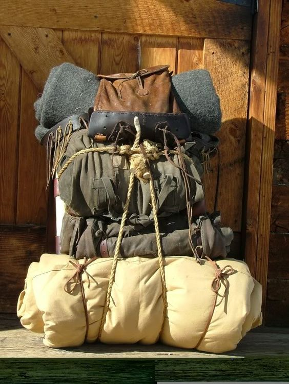

What to Pack
A good adventure starts with good preparation. Hobbits may prefer the comforts of home, but the road can take travellers far from warm meals and soft beds.
Packing the right supplies can make a long journey safer, easier, and much more comfortable.

Adventure Essentials
- A map of the road ahead
- A full water bottle
- Comfortable walking shoes
- A handkerchief or two
- A small pouch for coins and important odds and ends
- A little courage for when the road gets unexpected
Food for the Road
No Hobbit should set out on a journey without plenty of food. After all, there is breakfast, second breakfast, elevenses, luncheon, afternoon tea, dinner, and supper to think about.
Bread, cheese, fruit, and a few extra snacks are always worth packing. If you can get your hands on some Elven lembas bread, even better. A small amount can keep a traveller going when the road gets long.
Useful Gear
- A sturdy walking stick for long roads and unexpected hills
- A warm blanket or bedroll for nights under the stars
- A small cooking pot for potatoes, so you can “boil 'em, mash 'em, stick 'em in a stew”
- Rope for troublesome paths, steep climbs, or whatever adventure throws at you
- A lantern for dark roads, caves, and late-night wandering
- A good cloak for rain, cold winds, and hiding in plain sight when pretending to be a boulder seems like the best option
Before You Leave
Before stepping out the door, make sure everything is packed securely and nothing important has been left behind. A little preparation can save a lot of trouble once the road stretches far beyond the Shire.
“If you don't keep your feet, there's no knowing where you might be swept off to.” — Bilbo Baggins
Just don't be a forgetful Hobbit!
Ready to Go?
Your pack is ready, your supplies are gathered, and hopefully you remembered your handkerchief. There's only one thing left to do.